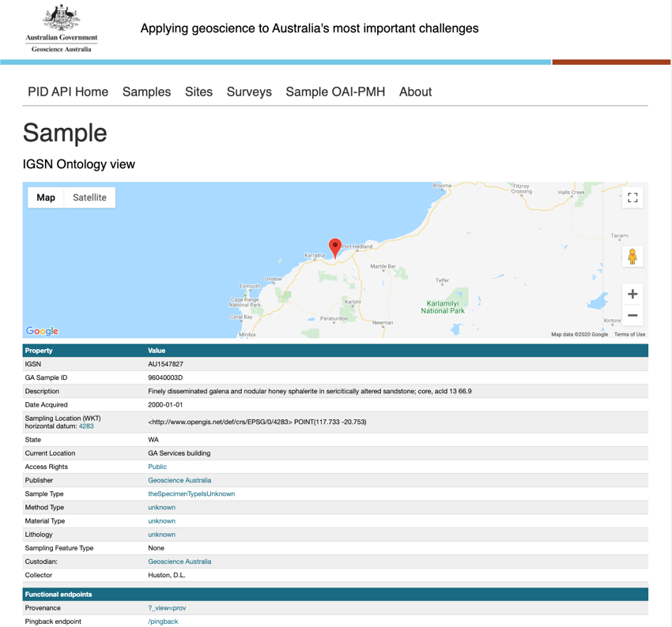

2. Metadata for IGSN Records - Link Headers¶
Given an IGSN value, get metadata about the resource identified by the IGSN when the resolved resource uses Link Headers[1,2] to identify locations where alternate serializations of the resolved entity may be retrieved.
This example examines the HTTP responses encountered when resolving an IGSN and how to retrieve the resolved content in different serializations given the hints provided by the resource server.
2.1. HTTP Requests During Resolution¶
[11]:
import pprint
import igsn_lib.oai
igsn_val = "AU1547827"
responses = igsn_lib.resolve(igsn_val)
print("HTTP redirections in resolution process:")
for i in range(len(responses)):
print(f"{i:>3}: {responses[i].status_code} {responses[i].url}")
HTTP redirections in resolution process:
0: 301 http://igsn.org/AU1547827
1: 302 http://hdl.handle.net/10273/AU1547827
2: 302 http://www.ga.gov.au/sample-catalogue/10273/AU1547827
3: 200 http://pid.geoscience.gov.au/sample/AU1547827
In this case the resolution process requires 4 seperate HTTP calls starting with a request to http://igsn.org/AU1547827 and ending up at http://pid.geoscience.gov.au/sample/AU1547827. These steps are normally hidden when accessing a resource with a web browser with the user presented with the default response provided by the web server handing the final response. Using a web browser to visit the resolution URL for an IGSN will typically result in a human readable web page like:

2.2. HTTP Response Headers¶
The HTTP response includes hints for the consumer to access the same information expressed with different profiles in different formats. For this server, those hints are expressed in the Link HTTP header in the response.
Looking at the raw HTTP response headers from each step in the resolution process, it can be seen there is a series of redirects using Location headers and corresponding HTTP 30x status codes. The final response from the resource server provides the Link header:
[12]:
for i in range(len(responses)):
print(f"{i:>3}: {responses[i].status_code} {responses[i].url}")
for k,v in responses[i].headers.items():
print(f"{k:>12} : {v}")
print("---")
0: 301 http://igsn.org/AU1547827
Server : nginx/1.14.1
Date : Fri, 30 Oct 2020 16:09:50 GMT
Content-Type : text/html; charset=iso-8859-1
Connection : keep-alive
Location : http://hdl.handle.net/10273/AU1547827
---
1: 302 http://hdl.handle.net/10273/AU1547827
Location : http://www.ga.gov.au/sample-catalogue/10273/AU1547827
Expires : Sat, 31 Oct 2020 16:09:51 GMT
Content-Type : text/html;charset=utf-8
Content-Length : 191
Date : Fri, 30 Oct 2020 16:09:50 GMT
---
2: 302 http://www.ga.gov.au/sample-catalogue/10273/AU1547827
Date : Fri, 30 Oct 2020 16:09:51 GMT
Server : Apache/2.2.11 (Unix) mod_ssl/2.2.11 OpenSSL/0.9.7d DAV/2 mod_jk/1.2.27
Location : http://pid.geoscience.gov.au/sample/AU1547827
Vary : Accept-Encoding
Content-Encoding : gzip
Content-Length : 20
Content-Type : text/html; charset=iso-8859-1
---
3: 200 http://pid.geoscience.gov.au/sample/AU1547827
Date : Fri, 30 Oct 2020 16:09:52 GMT
Content-Type : text/html
Content-Length : 6162
Connection : keep-alive
Server : Apache
Pragma : no-cache
Cache-Control : no-cache, no-store, private, must-revalidate, max-stale=0, post-check=0, pre-check=0
Expires : Thu, 01 Jan 1970 00:00:00 GMT
Content-Profile : <http://pid.geoscience.gov.au/def/ont/ga/igsn>
Content-Language : en
Link : <http://www.w3.org/ns/dx/prof/Profile>; rel="type"; token="csirov3"; anchor=<https://confluence.csiro.au/display/AusIGSN/CSIRO+IGSN+IMPLEMENTATION>, <http://www.w3.org/ns/dx/prof/Profile>; rel="type"; token="dct"; anchor=<http://purl.org/dc/terms/>, <http://www.w3.org/ns/dx/prof/Profile>; rel="type"; token="igsn"; anchor=<http://schema.igsn.org/description/>, <http://www.w3.org/ns/dx/prof/Profile>; rel="type"; token="igsn-r1"; anchor=<http://schema.igsn.org/description/1.0>, <http://www.w3.org/ns/dx/prof/Profile>; rel="type"; token="igsn-o"; anchor=<http://pid.geoscience.gov.au/def/ont/ga/igsn>, <http://www.w3.org/ns/dx/prof/Profile>; rel="type"; token="prov"; anchor=<http://www.w3.org/ns/prov/>, <http://www.w3.org/ns/dx/prof/Profile>; rel="type"; token="sosa"; anchor=<http://www.w3.org/ns/sosa/>, <http://www.w3.org/ns/dx/prof/Profile>; rel="type"; token="alternates"; anchor=<https://w3id.org/profile/alt>, <http://www.w3.org/ns/dx/prof/Profile>; rel="type"; token="all"; anchor=<http://www.w3.org/ns/dx/conneg/altr>, <http://pid.geoscience.gov.au/sample/AU1547827?_view=csirov3&_format=text/xml>; rel="alternate"; type="text/xml"; profile="https://confluence.csiro.au/display/AusIGSN/CSIRO+IGSN+IMPLEMENTATION", <http://pid.geoscience.gov.au/sample/AU1547827?_view=dct&_format=text/html>; rel="alternate"; type="text/html"; profile="http://purl.org/dc/terms/", <http://pid.geoscience.gov.au/sample/AU1547827?_view=dct&_format=text/turtle>; rel="alternate"; type="text/turtle"; profile="http://purl.org/dc/terms/", <http://pid.geoscience.gov.au/sample/AU1547827?_view=dct&_format=application/rdf+xml>; rel="alternate"; type="application/rdf+xml"; profile="http://purl.org/dc/terms/", <http://pid.geoscience.gov.au/sample/AU1547827?_view=dct&_format=application/ld+json>; rel="alternate"; type="application/ld+json"; profile="http://purl.org/dc/terms/", <http://pid.geoscience.gov.au/sample/AU1547827?_view=dct&_format=application/xml>; rel="alternate"; type="application/xml"; profile="http://purl.org/dc/terms/", <http://pid.geoscience.gov.au/sample/AU1547827?_view=dct&_format=text/n3>; rel="alternate"; type="text/n3"; profile="http://purl.org/dc/terms/", <http://pid.geoscience.gov.au/sample/AU1547827?_view=dct&_format=text/n-triples>; rel="alternate"; type="text/n-triples"; profile="http://purl.org/dc/terms/", <http://pid.geoscience.gov.au/sample/AU1547827?_view=dct&_format=text/xml>; rel="alternate"; type="text/xml"; profile="http://purl.org/dc/terms/", <http://pid.geoscience.gov.au/sample/AU1547827?_view=igsn&_format=text/xml>; rel="alternate"; type="text/xml"; profile="http://schema.igsn.org/description/", <http://pid.geoscience.gov.au/sample/AU1547827?_view=igsn-r1&_format=text/xml>; rel="alternate"; type="text/xml"; profile="http://schema.igsn.org/description/1.0", <http://pid.geoscience.gov.au/sample/AU1547827?_view=igsn-o&_format=text/html>; rel="self"; type="text/html"; profile="http://pid.geoscience.gov.au/def/ont/ga/igsn", <http://pid.geoscience.gov.au/sample/AU1547827?_view=igsn-o&_format=text/turtle>; rel="alternate"; type="text/turtle"; profile="http://pid.geoscience.gov.au/def/ont/ga/igsn", <http://pid.geoscience.gov.au/sample/AU1547827?_view=igsn-o&_format=application/rdf+xml>; rel="alternate"; type="application/rdf+xml"; profile="http://pid.geoscience.gov.au/def/ont/ga/igsn", <http://pid.geoscience.gov.au/sample/AU1547827?_view=igsn-o&_format=application/ld+json>; rel="alternate"; type="application/ld+json"; profile="http://pid.geoscience.gov.au/def/ont/ga/igsn", <http://pid.geoscience.gov.au/sample/AU1547827?_view=prov&_format=text/html>; rel="alternate"; type="text/html"; profile="http://www.w3.org/ns/prov/", <http://pid.geoscience.gov.au/sample/AU1547827?_view=prov&_format=text/turtle>; rel="alternate"; type="text/turtle"; profile="http://www.w3.org/ns/prov/", <http://pid.geoscience.gov.au/sample/AU1547827?_view=prov&_format=application/rdf+xml>; rel="alternate"; type="application/rdf+xml"; profile="http://www.w3.org/ns/prov/", <http://pid.geoscience.gov.au/sample/AU1547827?_view=prov&_format=application/ld+json>; rel="alternate"; type="application/ld+json"; profile="http://www.w3.org/ns/prov/", <http://pid.geoscience.gov.au/sample/AU1547827?_view=sosa&_format=text/turtle>; rel="alternate"; type="text/turtle"; profile="http://www.w3.org/ns/sosa/", <http://pid.geoscience.gov.au/sample/AU1547827?_view=sosa&_format=application/rdf+xml>; rel="alternate"; type="application/rdf+xml"; profile="http://www.w3.org/ns/sosa/", <http://pid.geoscience.gov.au/sample/AU1547827?_view=sosa&_format=application/ld+json>; rel="alternate"; type="application/ld+json"; profile="http://www.w3.org/ns/sosa/", <http://pid.geoscience.gov.au/sample/AU1547827?_view=alternates&_format=text/html>; rel="alternate"; type="text/html"; profile="https://w3id.org/profile/alt", <http://pid.geoscience.gov.au/sample/AU1547827?_view=alternates&_format=application/json>; rel="alternate"; type="application/json"; profile="https://w3id.org/profile/alt", <http://pid.geoscience.gov.au/sample/AU1547827?_view=alternates&_format=text/turtle>; rel="alternate"; type="text/turtle"; profile="https://w3id.org/profile/alt", <http://pid.geoscience.gov.au/sample/AU1547827?_view=alternates&_format=application/rdf+xml>; rel="alternate"; type="application/rdf+xml"; profile="https://w3id.org/profile/alt", <http://pid.geoscience.gov.au/sample/AU1547827?_view=alternates&_format=application/ld+json>; rel="alternate"; type="application/ld+json"; profile="https://w3id.org/profile/alt", <http://pid.geoscience.gov.au/sample/AU1547827?_view=alternates&_format=text/n3>; rel="alternate"; type="text/n3"; profile="https://w3id.org/profile/alt", <http://pid.geoscience.gov.au/sample/AU1547827?_view=alternates&_format=application/n-triples>; rel="alternate"; type="application/n-triples"; profile="https://w3id.org/profile/alt", <http://pid.geoscience.gov.au/sample/AU1547827?_view=all&_format=text/html>; rel="alternate"; type="text/html"; profile="http://www.w3.org/ns/dx/conneg/altr", <http://pid.geoscience.gov.au/sample/AU1547827?_view=all&_format=application/json>; rel="alternate"; type="application/json"; profile="http://www.w3.org/ns/dx/conneg/altr", <http://pid.geoscience.gov.au/sample/AU1547827?_view=all&_format=text/turtle>; rel="alternate"; type="text/turtle"; profile="http://www.w3.org/ns/dx/conneg/altr", <http://pid.geoscience.gov.au/sample/AU1547827?_view=all&_format=application/rdf+xml>; rel="alternate"; type="application/rdf+xml"; profile="http://www.w3.org/ns/dx/conneg/altr", <http://pid.geoscience.gov.au/sample/AU1547827?_view=all&_format=application/ld+json>; rel="alternate"; type="application/ld+json"; profile="http://www.w3.org/ns/dx/conneg/altr", <http://pid.geoscience.gov.au/sample/AU1547827?_view=all&_format=text/n3>; rel="alternate"; type="text/n3"; profile="http://www.w3.org/ns/dx/conneg/altr", <http://pid.geoscience.gov.au/sample/AU1547827?_view=all&_format=application/n-triples>; rel="alternate"; type="application/n-triples"; profile="http://www.w3.org/ns/dx/conneg/altr", <http://pid.geoscience.gov.au/sample/AU1547827/pingback>; rel="http://www.w3.org/ns/prov#pingback"
Vary : Accept-Encoding
---
2.3. RFC8288 Link Header¶
The final response from http://pid.geoscience.gov.au/sample/AU1547827 returns a lengthy Link HTTP header. The value of this header can be parsed according to the guidelines of RFC8288. This basically entails first splitting the value by comma to get individual entries in the header:
[4]:
link_header_value = responses[-1].headers.get('Link')
entries = link_header_value.split(",")
for entry in entries:
print(entry)
<http://www.w3.org/ns/dx/prof/Profile>; rel="type"; token="csirov3"; anchor=<https://confluence.csiro.au/display/AusIGSN/CSIRO+IGSN+IMPLEMENTATION>
<http://www.w3.org/ns/dx/prof/Profile>; rel="type"; token="dct"; anchor=<http://purl.org/dc/terms/>
<http://www.w3.org/ns/dx/prof/Profile>; rel="type"; token="igsn"; anchor=<http://schema.igsn.org/description/>
<http://www.w3.org/ns/dx/prof/Profile>; rel="type"; token="igsn-r1"; anchor=<http://schema.igsn.org/description/1.0>
<http://www.w3.org/ns/dx/prof/Profile>; rel="type"; token="igsn-o"; anchor=<http://pid.geoscience.gov.au/def/ont/ga/igsn>
<http://www.w3.org/ns/dx/prof/Profile>; rel="type"; token="prov"; anchor=<http://www.w3.org/ns/prov/>
<http://www.w3.org/ns/dx/prof/Profile>; rel="type"; token="sosa"; anchor=<http://www.w3.org/ns/sosa/>
<http://www.w3.org/ns/dx/prof/Profile>; rel="type"; token="alternates"; anchor=<https://w3id.org/profile/alt>
<http://www.w3.org/ns/dx/prof/Profile>; rel="type"; token="all"; anchor=<http://www.w3.org/ns/dx/conneg/altr>
<http://pid.geoscience.gov.au/sample/AU1547827?_view=csirov3&_format=text/xml>; rel="alternate"; type="text/xml"; profile="https://confluence.csiro.au/display/AusIGSN/CSIRO+IGSN+IMPLEMENTATION"
<http://pid.geoscience.gov.au/sample/AU1547827?_view=dct&_format=text/html>; rel="alternate"; type="text/html"; profile="http://purl.org/dc/terms/"
<http://pid.geoscience.gov.au/sample/AU1547827?_view=dct&_format=text/turtle>; rel="alternate"; type="text/turtle"; profile="http://purl.org/dc/terms/"
<http://pid.geoscience.gov.au/sample/AU1547827?_view=dct&_format=application/rdf+xml>; rel="alternate"; type="application/rdf+xml"; profile="http://purl.org/dc/terms/"
<http://pid.geoscience.gov.au/sample/AU1547827?_view=dct&_format=application/ld+json>; rel="alternate"; type="application/ld+json"; profile="http://purl.org/dc/terms/"
<http://pid.geoscience.gov.au/sample/AU1547827?_view=dct&_format=application/xml>; rel="alternate"; type="application/xml"; profile="http://purl.org/dc/terms/"
<http://pid.geoscience.gov.au/sample/AU1547827?_view=dct&_format=text/n3>; rel="alternate"; type="text/n3"; profile="http://purl.org/dc/terms/"
<http://pid.geoscience.gov.au/sample/AU1547827?_view=dct&_format=text/n-triples>; rel="alternate"; type="text/n-triples"; profile="http://purl.org/dc/terms/"
<http://pid.geoscience.gov.au/sample/AU1547827?_view=dct&_format=text/xml>; rel="alternate"; type="text/xml"; profile="http://purl.org/dc/terms/"
<http://pid.geoscience.gov.au/sample/AU1547827?_view=igsn&_format=text/xml>; rel="alternate"; type="text/xml"; profile="http://schema.igsn.org/description/"
<http://pid.geoscience.gov.au/sample/AU1547827?_view=igsn-r1&_format=text/xml>; rel="alternate"; type="text/xml"; profile="http://schema.igsn.org/description/1.0"
<http://pid.geoscience.gov.au/sample/AU1547827?_view=igsn-o&_format=text/html>; rel="self"; type="text/html"; profile="http://pid.geoscience.gov.au/def/ont/ga/igsn"
<http://pid.geoscience.gov.au/sample/AU1547827?_view=igsn-o&_format=text/turtle>; rel="alternate"; type="text/turtle"; profile="http://pid.geoscience.gov.au/def/ont/ga/igsn"
<http://pid.geoscience.gov.au/sample/AU1547827?_view=igsn-o&_format=application/rdf+xml>; rel="alternate"; type="application/rdf+xml"; profile="http://pid.geoscience.gov.au/def/ont/ga/igsn"
<http://pid.geoscience.gov.au/sample/AU1547827?_view=igsn-o&_format=application/ld+json>; rel="alternate"; type="application/ld+json"; profile="http://pid.geoscience.gov.au/def/ont/ga/igsn"
<http://pid.geoscience.gov.au/sample/AU1547827?_view=prov&_format=text/html>; rel="alternate"; type="text/html"; profile="http://www.w3.org/ns/prov/"
<http://pid.geoscience.gov.au/sample/AU1547827?_view=prov&_format=text/turtle>; rel="alternate"; type="text/turtle"; profile="http://www.w3.org/ns/prov/"
<http://pid.geoscience.gov.au/sample/AU1547827?_view=prov&_format=application/rdf+xml>; rel="alternate"; type="application/rdf+xml"; profile="http://www.w3.org/ns/prov/"
<http://pid.geoscience.gov.au/sample/AU1547827?_view=prov&_format=application/ld+json>; rel="alternate"; type="application/ld+json"; profile="http://www.w3.org/ns/prov/"
<http://pid.geoscience.gov.au/sample/AU1547827?_view=sosa&_format=text/turtle>; rel="alternate"; type="text/turtle"; profile="http://www.w3.org/ns/sosa/"
<http://pid.geoscience.gov.au/sample/AU1547827?_view=sosa&_format=application/rdf+xml>; rel="alternate"; type="application/rdf+xml"; profile="http://www.w3.org/ns/sosa/"
<http://pid.geoscience.gov.au/sample/AU1547827?_view=sosa&_format=application/ld+json>; rel="alternate"; type="application/ld+json"; profile="http://www.w3.org/ns/sosa/"
<http://pid.geoscience.gov.au/sample/AU1547827?_view=alternates&_format=text/html>; rel="alternate"; type="text/html"; profile="https://w3id.org/profile/alt"
<http://pid.geoscience.gov.au/sample/AU1547827?_view=alternates&_format=application/json>; rel="alternate"; type="application/json"; profile="https://w3id.org/profile/alt"
<http://pid.geoscience.gov.au/sample/AU1547827?_view=alternates&_format=text/turtle>; rel="alternate"; type="text/turtle"; profile="https://w3id.org/profile/alt"
<http://pid.geoscience.gov.au/sample/AU1547827?_view=alternates&_format=application/rdf+xml>; rel="alternate"; type="application/rdf+xml"; profile="https://w3id.org/profile/alt"
<http://pid.geoscience.gov.au/sample/AU1547827?_view=alternates&_format=application/ld+json>; rel="alternate"; type="application/ld+json"; profile="https://w3id.org/profile/alt"
<http://pid.geoscience.gov.au/sample/AU1547827?_view=alternates&_format=text/n3>; rel="alternate"; type="text/n3"; profile="https://w3id.org/profile/alt"
<http://pid.geoscience.gov.au/sample/AU1547827?_view=alternates&_format=application/n-triples>; rel="alternate"; type="application/n-triples"; profile="https://w3id.org/profile/alt"
<http://pid.geoscience.gov.au/sample/AU1547827?_view=all&_format=text/html>; rel="alternate"; type="text/html"; profile="http://www.w3.org/ns/dx/conneg/altr"
<http://pid.geoscience.gov.au/sample/AU1547827?_view=all&_format=application/json>; rel="alternate"; type="application/json"; profile="http://www.w3.org/ns/dx/conneg/altr"
<http://pid.geoscience.gov.au/sample/AU1547827?_view=all&_format=text/turtle>; rel="alternate"; type="text/turtle"; profile="http://www.w3.org/ns/dx/conneg/altr"
<http://pid.geoscience.gov.au/sample/AU1547827?_view=all&_format=application/rdf+xml>; rel="alternate"; type="application/rdf+xml"; profile="http://www.w3.org/ns/dx/conneg/altr"
<http://pid.geoscience.gov.au/sample/AU1547827?_view=all&_format=application/ld+json>; rel="alternate"; type="application/ld+json"; profile="http://www.w3.org/ns/dx/conneg/altr"
<http://pid.geoscience.gov.au/sample/AU1547827?_view=all&_format=text/n3>; rel="alternate"; type="text/n3"; profile="http://www.w3.org/ns/dx/conneg/altr"
<http://pid.geoscience.gov.au/sample/AU1547827?_view=all&_format=application/n-triples>; rel="alternate"; type="application/n-triples"; profile="http://www.w3.org/ns/dx/conneg/altr"
<http://pid.geoscience.gov.au/sample/AU1547827/pingback>; rel="http://www.w3.org/ns/prov#pingback"
Then splitting each entry using the semi-colon as a delimiter. The first value is a URI, the remaining values are key=value pairs. The entire header can thus be parsed to a list of URIs with associated key=value entries. The following method provide a mechanism to parse the Link header value and print out the resulting entries.
[13]:
def _uriValue(v):
v = v.strip()
if v[0] != '<' and v[-1] != '>':
raise ValueError(f"Not a URI: '{v}'")
return v[1:-1]
def _propValue(v):
v = v.strip()
try:
return _urivalue(v)
except:
pass
#Not a URI so must be a quoted thing.
if v[0] != '"' and v[-1] != '"':
raise ValueError(f"Expected quoted value: '{v}'")
return v[1:-1]
def parseLinkHeader(hv):
res = []
vals = hv.split(',')
for val in vals:
entry = {}
try:
props = val.split(";")
entry['uri'] = _uriValue(props[0])
for prop in props[1:]:
k,v = prop.strip().split("=", 1)
entry[k] = _propValue(v)
res.append(entry)
except ValueError as e:
#Invalid header value, ignore
pass
return res
def printLinkHeaderEntries(entries, indent=' '):
for entry in entries:
for k,v in entry.items():
if k == 'uri':
print(f"{indent}{v}:")
else:
print(f"{indent} {k}: {v}")
link_header_entries = parseLinkHeader(link_header_value)
printLinkHeaderEntries(link_header_entries)
http://pid.geoscience.gov.au/sample/AU1547827?_view=csirov3&_format=text/xml:
rel: alternate
type: text/xml
profile: https://confluence.csiro.au/display/AusIGSN/CSIRO+IGSN+IMPLEMENTATION
http://pid.geoscience.gov.au/sample/AU1547827?_view=dct&_format=text/html:
rel: alternate
type: text/html
profile: http://purl.org/dc/terms/
http://pid.geoscience.gov.au/sample/AU1547827?_view=dct&_format=text/turtle:
rel: alternate
type: text/turtle
profile: http://purl.org/dc/terms/
http://pid.geoscience.gov.au/sample/AU1547827?_view=dct&_format=application/rdf+xml:
rel: alternate
type: application/rdf+xml
profile: http://purl.org/dc/terms/
http://pid.geoscience.gov.au/sample/AU1547827?_view=dct&_format=application/ld+json:
rel: alternate
type: application/ld+json
profile: http://purl.org/dc/terms/
http://pid.geoscience.gov.au/sample/AU1547827?_view=dct&_format=application/xml:
rel: alternate
type: application/xml
profile: http://purl.org/dc/terms/
http://pid.geoscience.gov.au/sample/AU1547827?_view=dct&_format=text/n3:
rel: alternate
type: text/n3
profile: http://purl.org/dc/terms/
http://pid.geoscience.gov.au/sample/AU1547827?_view=dct&_format=text/n-triples:
rel: alternate
type: text/n-triples
profile: http://purl.org/dc/terms/
http://pid.geoscience.gov.au/sample/AU1547827?_view=dct&_format=text/xml:
rel: alternate
type: text/xml
profile: http://purl.org/dc/terms/
http://pid.geoscience.gov.au/sample/AU1547827?_view=igsn&_format=text/xml:
rel: alternate
type: text/xml
profile: http://schema.igsn.org/description/
http://pid.geoscience.gov.au/sample/AU1547827?_view=igsn-r1&_format=text/xml:
rel: alternate
type: text/xml
profile: http://schema.igsn.org/description/1.0
http://pid.geoscience.gov.au/sample/AU1547827?_view=igsn-o&_format=text/html:
rel: self
type: text/html
profile: http://pid.geoscience.gov.au/def/ont/ga/igsn
http://pid.geoscience.gov.au/sample/AU1547827?_view=igsn-o&_format=text/turtle:
rel: alternate
type: text/turtle
profile: http://pid.geoscience.gov.au/def/ont/ga/igsn
http://pid.geoscience.gov.au/sample/AU1547827?_view=igsn-o&_format=application/rdf+xml:
rel: alternate
type: application/rdf+xml
profile: http://pid.geoscience.gov.au/def/ont/ga/igsn
http://pid.geoscience.gov.au/sample/AU1547827?_view=igsn-o&_format=application/ld+json:
rel: alternate
type: application/ld+json
profile: http://pid.geoscience.gov.au/def/ont/ga/igsn
http://pid.geoscience.gov.au/sample/AU1547827?_view=prov&_format=text/html:
rel: alternate
type: text/html
profile: http://www.w3.org/ns/prov/
http://pid.geoscience.gov.au/sample/AU1547827?_view=prov&_format=text/turtle:
rel: alternate
type: text/turtle
profile: http://www.w3.org/ns/prov/
http://pid.geoscience.gov.au/sample/AU1547827?_view=prov&_format=application/rdf+xml:
rel: alternate
type: application/rdf+xml
profile: http://www.w3.org/ns/prov/
http://pid.geoscience.gov.au/sample/AU1547827?_view=prov&_format=application/ld+json:
rel: alternate
type: application/ld+json
profile: http://www.w3.org/ns/prov/
http://pid.geoscience.gov.au/sample/AU1547827?_view=sosa&_format=text/turtle:
rel: alternate
type: text/turtle
profile: http://www.w3.org/ns/sosa/
http://pid.geoscience.gov.au/sample/AU1547827?_view=sosa&_format=application/rdf+xml:
rel: alternate
type: application/rdf+xml
profile: http://www.w3.org/ns/sosa/
http://pid.geoscience.gov.au/sample/AU1547827?_view=sosa&_format=application/ld+json:
rel: alternate
type: application/ld+json
profile: http://www.w3.org/ns/sosa/
http://pid.geoscience.gov.au/sample/AU1547827?_view=alternates&_format=text/html:
rel: alternate
type: text/html
profile: https://w3id.org/profile/alt
http://pid.geoscience.gov.au/sample/AU1547827?_view=alternates&_format=application/json:
rel: alternate
type: application/json
profile: https://w3id.org/profile/alt
http://pid.geoscience.gov.au/sample/AU1547827?_view=alternates&_format=text/turtle:
rel: alternate
type: text/turtle
profile: https://w3id.org/profile/alt
http://pid.geoscience.gov.au/sample/AU1547827?_view=alternates&_format=application/rdf+xml:
rel: alternate
type: application/rdf+xml
profile: https://w3id.org/profile/alt
http://pid.geoscience.gov.au/sample/AU1547827?_view=alternates&_format=application/ld+json:
rel: alternate
type: application/ld+json
profile: https://w3id.org/profile/alt
http://pid.geoscience.gov.au/sample/AU1547827?_view=alternates&_format=text/n3:
rel: alternate
type: text/n3
profile: https://w3id.org/profile/alt
http://pid.geoscience.gov.au/sample/AU1547827?_view=alternates&_format=application/n-triples:
rel: alternate
type: application/n-triples
profile: https://w3id.org/profile/alt
http://pid.geoscience.gov.au/sample/AU1547827?_view=all&_format=text/html:
rel: alternate
type: text/html
profile: http://www.w3.org/ns/dx/conneg/altr
http://pid.geoscience.gov.au/sample/AU1547827?_view=all&_format=application/json:
rel: alternate
type: application/json
profile: http://www.w3.org/ns/dx/conneg/altr
http://pid.geoscience.gov.au/sample/AU1547827?_view=all&_format=text/turtle:
rel: alternate
type: text/turtle
profile: http://www.w3.org/ns/dx/conneg/altr
http://pid.geoscience.gov.au/sample/AU1547827?_view=all&_format=application/rdf+xml:
rel: alternate
type: application/rdf+xml
profile: http://www.w3.org/ns/dx/conneg/altr
http://pid.geoscience.gov.au/sample/AU1547827?_view=all&_format=application/ld+json:
rel: alternate
type: application/ld+json
profile: http://www.w3.org/ns/dx/conneg/altr
http://pid.geoscience.gov.au/sample/AU1547827?_view=all&_format=text/n3:
rel: alternate
type: text/n3
profile: http://www.w3.org/ns/dx/conneg/altr
http://pid.geoscience.gov.au/sample/AU1547827?_view=all&_format=application/n-triples:
rel: alternate
type: application/n-triples
profile: http://www.w3.org/ns/dx/conneg/altr
http://pid.geoscience.gov.au/sample/AU1547827/pingback:
rel: http://www.w3.org/ns/prov#pingback
2.4. Request Resource with Profile and Serialization¶
Now it becomes a bit clearer that the resource is available in several alternate renderings. The different types of rendering (i.e. the format of the resulting response) are:
[17]:
resource_types = set()
for entry in link_header_entries:
if entry['rel'] == 'alternate':
resource_types.add(entry['type'])
print("Types of resource serialization available:\n")
print("\n".join(resource_types))
Types of resource serialization available:
text/n3
text/html
application/json
application/n-triples
text/xml
application/ld+json
application/xml
text/n-triples
text/turtle
application/rdf+xml
And the resource can be expressed using different profiles:
[18]:
resource_profiles = set()
for entry in link_header_entries:
if entry['rel'] == 'alternate':
resource_profiles.add(entry['profile'])
print("Profiles of resource available:\n")
print("\n".join(resource_profiles))
Profiles of resource available:
http://schema.igsn.org/description/1.0
http://purl.org/dc/terms/
http://www.w3.org/ns/dx/conneg/altr
http://schema.igsn.org/description/
http://www.w3.org/ns/prov/
http://www.w3.org/ns/sosa/
https://w3id.org/profile/alt
http://pid.geoscience.gov.au/def/ont/ga/igsn
https://confluence.csiro.au/display/AusIGSN/CSIRO+IGSN+IMPLEMENTATION
2.4.1. Dublin Core as Turtle¶
Hence to retrieve the resource as expressed in the Dubin Core profile and serialized as Turtle, we look in the Link header entries for rel=alternate and type=text/turtle and profile=http://purl.org/dc/terms/:
[19]:
def findUrl(entries, resource_profile, resource_type):
for entry in entries:
if entry['rel'] == 'alternate':
if entry['type'] == resource_type and entry['profile'] == resource_profile:
return entry['uri']
return None
resource_type = 'text/turtle'
resource_profile = 'http://purl.org/dc/terms/'
resource_url = findUrl(link_header_entries, resource_profile, resource_type)
print(f"URL = {resource_url}")
URL = http://pid.geoscience.gov.au/sample/AU1547827?_view=dct&_format=text/turtle
Retrieving the document from that URL provides the resource identified by the identifier AU1547827 expressed in the profile http://purl.org/dc/terms/ and serialized as text/turtle results in the following Turtle, which is an alternate representation of the resource seen in the original web page:
[20]:
import requests
response = requests.get(resource_url)
print(response.text)
@prefix adms: <http://www.w3.org/ns/adms#> .
@prefix aurole: <http://communications.data.gov.au/def/role/> .
@prefix dct: <http://purl.org/dc/terms/> .
@prefix foaf: <http://xmlns.com/foaf/0.1/> .
@prefix geosp: <http://www.opengis.net/ont/geosparql#> .
@prefix org: <http://www.w3.org/ns/org#> .
@prefix prov: <http://www.w3.org/ns/prov#> .
@prefix rdf: <http://www.w3.org/1999/02/22-rdf-syntax-ns#> .
@prefix rdfs: <http://www.w3.org/2000/01/rdf-schema#> .
@prefix samfl: <http://def.seegrid.csiro.au/ontology/om/sam-lite#> .
@prefix skos: <http://www.w3.org/2004/02/skos/core#> .
@prefix xml: <http://www.w3.org/XML/1998/namespace> .
@prefix xsd: <http://www.w3.org/2001/XMLSchema#> .
<http://pid.geoscience.gov.au/sample/AU1547827> a dct:PhysicalResource ;
rdfs:label "Sample igsn:AU1547827"^^xsd:string ;
dct:coverage "<http://www.opengis.net/def/crs/EPSG/0/4283> POINT(117.733 -20.753)"^^geosp:wktLiteral ;
dct:date "2000-01-01"^^xsd:date ;
dct:description "Finely disseminated galena and nodular honey sphalerite in sericitically altered sandstone; core, acld 13 66.9"^^xsd:string ;
dct:format <http://vocabulary.odm2.org/medium/unknown> ;
dct:identifier "AU1547827"^^xsd:string ;
dct:publisher <http://pid.geoscience.gov.au/org/ga/geoscienceaustralia> ;
dct:type <http://vocabulary.odm2.org/specimentype/theSpecimenTypeIsUnknown> ;
prov:pingback <http://pid.geoscience.gov.au/sample/AU1547827/pingback> .
<http://pid.geoscience.gov.au/org/ga/geoscienceaustralia> a dct:Agent .
2.4.2. Profiles x Type¶
Note that as can be seen below, not all serializations are available for all types.
[21]:
for profile in resource_profiles:
print(f"Profile: {profile}")
for rtype in resource_types:
url = findUrl(link_header_entries, profile, rtype)
if not url is None:
print(f"{rtype:>24} : {url}")
print()
Profile: http://schema.igsn.org/description/1.0
text/xml : http://pid.geoscience.gov.au/sample/AU1547827?_view=igsn-r1&_format=text/xml
Profile: http://purl.org/dc/terms/
text/n3 : http://pid.geoscience.gov.au/sample/AU1547827?_view=dct&_format=text/n3
text/html : http://pid.geoscience.gov.au/sample/AU1547827?_view=dct&_format=text/html
text/xml : http://pid.geoscience.gov.au/sample/AU1547827?_view=dct&_format=text/xml
application/ld+json : http://pid.geoscience.gov.au/sample/AU1547827?_view=dct&_format=application/ld+json
application/xml : http://pid.geoscience.gov.au/sample/AU1547827?_view=dct&_format=application/xml
text/n-triples : http://pid.geoscience.gov.au/sample/AU1547827?_view=dct&_format=text/n-triples
text/turtle : http://pid.geoscience.gov.au/sample/AU1547827?_view=dct&_format=text/turtle
application/rdf+xml : http://pid.geoscience.gov.au/sample/AU1547827?_view=dct&_format=application/rdf+xml
Profile: http://www.w3.org/ns/dx/conneg/altr
text/n3 : http://pid.geoscience.gov.au/sample/AU1547827?_view=all&_format=text/n3
text/html : http://pid.geoscience.gov.au/sample/AU1547827?_view=all&_format=text/html
application/json : http://pid.geoscience.gov.au/sample/AU1547827?_view=all&_format=application/json
application/n-triples : http://pid.geoscience.gov.au/sample/AU1547827?_view=all&_format=application/n-triples
application/ld+json : http://pid.geoscience.gov.au/sample/AU1547827?_view=all&_format=application/ld+json
text/turtle : http://pid.geoscience.gov.au/sample/AU1547827?_view=all&_format=text/turtle
application/rdf+xml : http://pid.geoscience.gov.au/sample/AU1547827?_view=all&_format=application/rdf+xml
Profile: http://schema.igsn.org/description/
text/xml : http://pid.geoscience.gov.au/sample/AU1547827?_view=igsn&_format=text/xml
Profile: http://www.w3.org/ns/prov/
text/html : http://pid.geoscience.gov.au/sample/AU1547827?_view=prov&_format=text/html
application/ld+json : http://pid.geoscience.gov.au/sample/AU1547827?_view=prov&_format=application/ld+json
text/turtle : http://pid.geoscience.gov.au/sample/AU1547827?_view=prov&_format=text/turtle
application/rdf+xml : http://pid.geoscience.gov.au/sample/AU1547827?_view=prov&_format=application/rdf+xml
Profile: http://www.w3.org/ns/sosa/
application/ld+json : http://pid.geoscience.gov.au/sample/AU1547827?_view=sosa&_format=application/ld+json
text/turtle : http://pid.geoscience.gov.au/sample/AU1547827?_view=sosa&_format=text/turtle
application/rdf+xml : http://pid.geoscience.gov.au/sample/AU1547827?_view=sosa&_format=application/rdf+xml
Profile: https://w3id.org/profile/alt
text/n3 : http://pid.geoscience.gov.au/sample/AU1547827?_view=alternates&_format=text/n3
text/html : http://pid.geoscience.gov.au/sample/AU1547827?_view=alternates&_format=text/html
application/json : http://pid.geoscience.gov.au/sample/AU1547827?_view=alternates&_format=application/json
application/n-triples : http://pid.geoscience.gov.au/sample/AU1547827?_view=alternates&_format=application/n-triples
application/ld+json : http://pid.geoscience.gov.au/sample/AU1547827?_view=alternates&_format=application/ld+json
text/turtle : http://pid.geoscience.gov.au/sample/AU1547827?_view=alternates&_format=text/turtle
application/rdf+xml : http://pid.geoscience.gov.au/sample/AU1547827?_view=alternates&_format=application/rdf+xml
Profile: http://pid.geoscience.gov.au/def/ont/ga/igsn
application/ld+json : http://pid.geoscience.gov.au/sample/AU1547827?_view=igsn-o&_format=application/ld+json
text/turtle : http://pid.geoscience.gov.au/sample/AU1547827?_view=igsn-o&_format=text/turtle
application/rdf+xml : http://pid.geoscience.gov.au/sample/AU1547827?_view=igsn-o&_format=application/rdf+xml
Profile: https://confluence.csiro.au/display/AusIGSN/CSIRO+IGSN+IMPLEMENTATION
text/xml : http://pid.geoscience.gov.au/sample/AU1547827?_view=csirov3&_format=text/xml
[ ]: